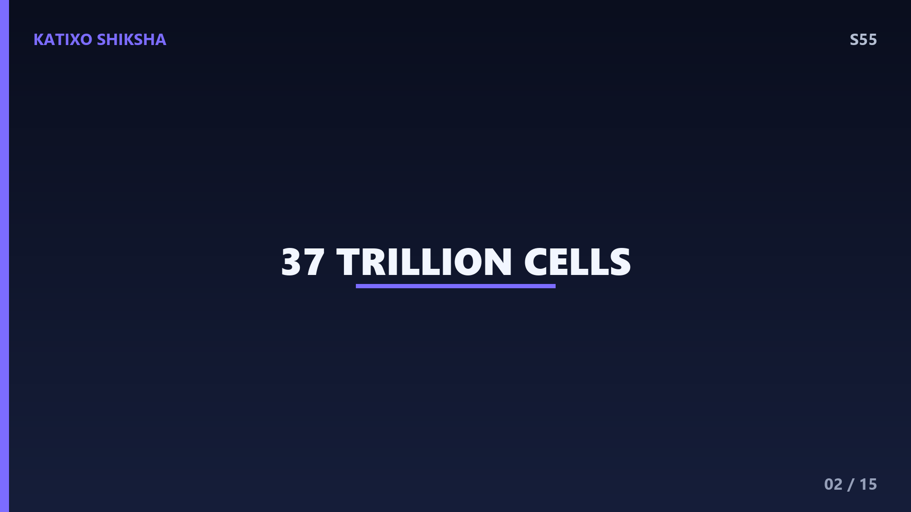
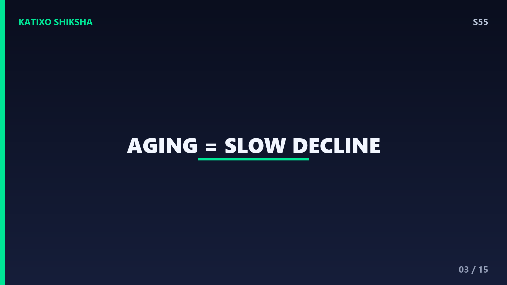
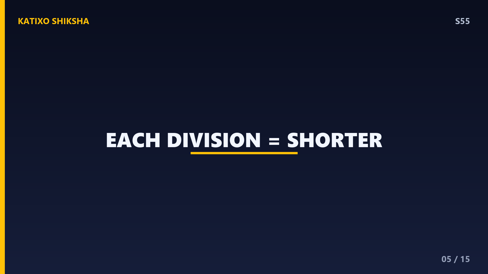
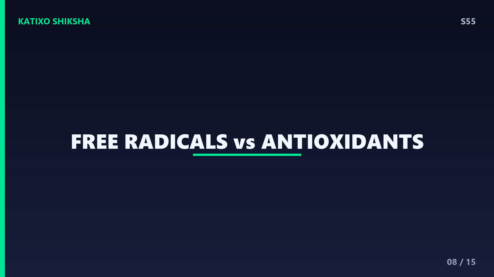
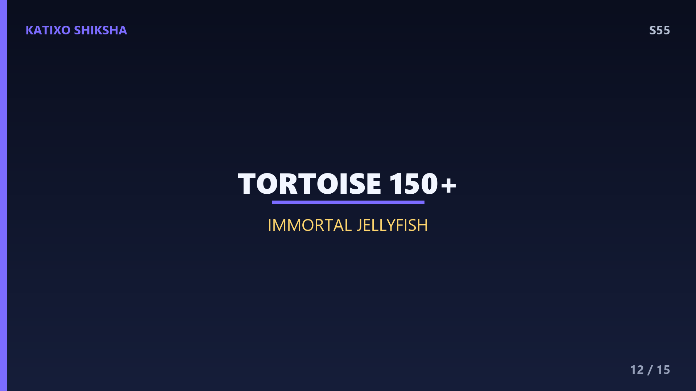

S55 — हम बूढ़े क्यों होते हैं?
Slide 1दोस्तों, एक सवाल सोचो... हम सब हर दिन थोड़ा-थोड़ा बूढ़े क्यों हो रहे हैं? बच्चे जवान होते हैं, फिर skin पर wrinkles आते हैं, बाल grey होने लगते हैं, और body slow हो जाती है। पर ऐसा होता क्यों है? क्या इसे रोका जा सकता है? आज Katixo Shiksha पर हम aging के पीछे की असली science समझेंगे। तुम्हारी body करोड़ों tiny cells से बनी है, और इन्हीं cells के अंदर छुपा है बूढ़े होने का राज। तैयार हो? चलो इस amazing biology mystery को खोलते हैं!

Slide 2सबसे पहले basics, दोस्तों। तुम्हारी body लगभग 37 trillion यानी 37 लाख करोड़ cells से बनी है! ये cells तुम्हारी building blocks हैं, बिल्कुल lego blocks की तरह। हर cell का अपना काम है, कोई skin बनाती है, कोई blood, कोई दिमाग के signals भेजती है। और सबसे cool बात ये है कि ये cells खुद को copy कर सकती हैं। जब कोई पुरानी या damaged cell मरती है, तो नई cell division करके उसकी जगह ले लेती है। यही repair और replacement का system तुम्हें जिंदा और healthy रखता है। पर इस system की एक limit है।

Slide 3तो aging actually है क्या? दोस्तों, aging का मतलब है तुम्हारी cells और body का धीरे-धीरे कम efficiently काम करना। ये कोई एक दिन में होने वाली घटना नहीं, बल्कि years तक चलने वाला slow process है। जब तुम जवान हो, cells तेजी से और perfectly repair होती हैं। पर समय के साथ ये repair का काम slow और कम accurate होने लगता है। damage जमा होता जाता है। यही reason है कि घाव slowly भरते हैं, energy कम लगती है, और body पहले जैसी spring back नहीं करती। अब सवाल ये है कि ये decline शुरू कहाँ से होता है? जवाब cells के अंदर है।
Slide 4अब मिलो aging के सबसे बड़े hero से, telomeres! दोस्तों, हर cell के अंदर chromosomes होते हैं जिनमें तुम्हारा DNA packed रहता है। इन chromosomes के सिरों पर protective caps होते हैं जिन्हें telomeres कहते हैं। इन्हें ऐसे समझो जैसे shoelace यानी जूते के फीते के सिरों पर वो plastic वाली tip होती है, जिसे aglet कहते हैं। ये tip फीते को फटने से बचाती है। बिल्कुल वैसे ही telomeres तुम्हारे precious DNA को damage और tangle होने से बचाते हैं। ये एक tiny सी चीज है, पर तुम्हारे बूढ़े होने में इसका सबसे बड़ा role है। आगे देखते हैं कैसे।

Slide 5यहाँ है असली twist, दोस्तों! हर बार जब कोई cell divide होकर copy बनाती है, उसके telomeres थोड़े छोटे हो जाते हैं। हर division पर थोड़ा सा घिसाव, जैसे बार-बार use करने से फीते की tip घिस जाती है। ये एक biological clock की तरह काम करता है। शुरू में telomeres लंबे होते हैं, पर हर copy के साथ ये shrink होते जाते हैं। एक cell average लगभग 50 बार divide कर सकती है, इससे ज्यादा नहीं। यानी तुम्हारी हर cell के पास एक fixed budget है divisions का। जब telomeres बहुत छोटे हो जाएं, तब क्या होता है? वो अगली slide में।
Slide 6जब telomeres बहुत छोटे हो जाते हैं, तो cell एक decision लेती है, दोस्तों। वो divide करना बंद कर देती है। इस state को senescence कहते हैं। और जो लगभग 50 divisions की maximum limit है, उसे scientist Leonard Hayflick के नाम पर Hayflick limit कहा जाता है। सोचो, ये एक safety mechanism है! अगर damaged telomeres वाली cell divide करती रहती, तो errors फैल जाते और cancer का risk बढ़ जाता। तो cell खुद को रोक लेती है। पर problem ये है कि ऐसी रुकी हुई cells धीरे-धीरе जमा होती जाती हैं, और tissues कमजोर पड़ने लगते हैं। यही aging का एक बड़ा हिस्सा है।
Slide 7अब बात करते हैं DNA damage की, दोस्तों। तुम्हारी cells हर दिन हजारों बार DNA copy करती हैं, और इतनी copying में कभी-कभी छोटी-छोटी गलतियाँ हो जाती हैं, जैसे किताब हाथ से copy करते वक्त typo हो जाए। साथ ही बाहरी चीजें भी DNA को नुकसान पहुँचाती हैं, जैसे sun की UV rays, pollution, और radiation। young age में body इन errors को जल्दी fix कर लेती है। पर समय के साथ ये mistakes जमा होती जाती हैं और repair system थक जाता है। जितना ज्यादा DNA damage, उतना तेज aging। इसीलिए तुम्हारी lifestyle का इतना असर पड़ता है।

Slide 8एक और villain है, दोस्तों, free radicals! जब तुम्हारी cells food से energy बनाती हैं, तो एक byproduct निकलता है जिसे free radicals कहते हैं। ये unstable molecules होते हैं जो cells के parts को नुकसान पहुँचाते हैं। इस damage को oxidative stress कहते हैं, सोचो जैसे loहे में जंग लग जाना। UV rays और smoking भी free radicals बढ़ाते हैं। पर अच्छी खबर ये है कि antioxidants इन्हें neutralise कर देते हैं! fruits, vegetables, berries और green tea में भरपूर antioxidants होते हैं। इसीलिए healthy diet सिर्फ fitness नहीं, बल्कि तुम्हारी cells को बचाने का भी काम करती है।
Slide 9अब समझो कि skin क्यों झुर्रियों वाली हो जाती है, दोस्तों। तुम्हारी skin में दो खास proteins होते हैं, collagen और elastin। collagen skin को firm और भरा-भरा रखता है, और elastin उसे stretch के बाद वापस उछलने यानी bounce back की ताकत देता है। young skin में ये proteins भरपूर होते हैं, इसलिए वो smooth और tight रहती है। पर age के साथ body इन्हें कम बनाती है, और UV exposure इन्हें तोड़ देता है। result? skin पतली होती है, elasticity कम होती है, और wrinkles आ जाती हैं। यही reason है कि sunscreen तुम्हारी skin का सबसे अच्छा दोस्त है।
Slide 10तुम्हारी cells के अंदर tiny power plants होते हैं जिन्हें mitochondria कहते हैं, दोस्तों। ये food को energy में बदलते हैं, जिससे तुम्हारी हर activity चलती है। पर age के साथ ये power plants कम efficient हो जाते हैं, जैसे एक पुरानी battery जो जल्दी खत्म हो जाती है। कम energy का मतलब है cells slow काम करती हैं और ज्यादा free radicals बनते हैं। साथ ही वो रुकी हुई senescent cells भी जमा होती जाती हैं, जिन्हें scientist मज़ाक में zombie cells कहते हैं, क्योंकि ये न ठीक से जीती हैं न मरती हैं, बस आसपास की healthy cells को परेशान करती रहती हैं।
Slide 11अब जोड़ते हैं सारे dots, दोस्तों! ये सब changes मिलकर वही signs बनाते हैं जो हम aging में देखते हैं। skin में collagen कम होने से wrinkles आती हैं। बाल इसलिए grey होते हैं क्योंकि उनमें melanin बनाने वाली cells कम active हो जाती हैं, melanin ही बालों को color देता है। bones से calcium निकलता है तो वो कमजोर और भुरभुरी हो जाती हैं। और cell repair slow होने से घाव और injuries भरने में ज्यादा time लगता है। देखा? हर visible change के पीछे एक छोटी सी cellular story है। पर रुको, क्या हर जीव एक जैसी speed से बूढ़ा होता है? बिल्कुल नहीं!

Slide 12ये part तो mind-blowing है, दोस्तों! अलग-अलग animals बहुत अलग rate से बूढ़े होते हैं। एक tiny mouse सिर्फ 2 से 3 साल जीता है, जबकि एक giant tortoise 150 साल से भी ज्यादा! और सबसे crazy है Turritopsis dohrnii नाम की एक jellyfish, जिसे immortal jellyfish कहते हैं, क्योंकि वो खुद को वापस baby stage में बदल सकती है, यानी लगभग biologically immortal! ये बताता है कि aging fixed नहीं है, ये genes और biology पर depend करता है। और यही बात scientists को excite करती है, अगर nature कुछ जीवों में aging slow कर सकती है, तो शायद हम भी सीख सकते हैं इससे।
Slide 13Quick brain check, दोस्तों! चलो देखते हैं तुमने कितना ध्यान दिया। तीन सवाल हैं, और हर सवाल के बाद video pause करके खुद जवाब सोचना, फिर आगे बढ़ना। पहला सवाल, chromosomes के सिरों पर मौजूद उन protective caps का नाम क्या है जो हर division पर छोटे होते हैं? दूसरा सवाल, एक cell average कितनी बार divide कर सकती है, और इस limit को किस scientist के नाम पर जाना जाता है? तीसरा सवाल, food से energy बनाने वाले cell के power plants को क्या कहते हैं? अब video रोको और सोचो। ready? जवाब अगली slide पर!
Slide 14चलो जवाब मिलाते हैं, दोस्तों! पहला जवाब, chromosomes के सिरों पर मौजूद protective caps को telomeres कहते हैं, और ये shoelace की plastic tip यानी aglet की तरह DNA को बचाते हैं। दूसरा जवाब, एक cell average लगभग 50 बार divide कर सकती है, और इस limit को Hayflick limit कहते हैं, scientist Leonard Hayflick के नाम पर। तीसरा जवाब, cell के power plants को mitochondria कहते हैं, जो food को energy में बदलते हैं। कितने सही हुए? अगर सब सही हुए तो शाबाश, तुम तो असली biology genius हो! और अगर कोई miss हुआ, तो कोई बात नहीं, अब तुम्हें पता है।
Slide 15तो दोस्तों, आज हमने सीखा कि aging असल में तुम्हारी cells के level पर होने वाली एक slow process है, छोटे होते telomeres, जमा होता DNA damage, free radicals, टूटता collagen, और थकते mitochondria, ये सब मिलकर हमें बूढ़ा बनाते हैं। पर अच्छी खबर ये है कि तुम इसे slow कर सकते हो! अच्छा खाना खाओ, रोज exercise करो, पूरी नींद लो, sunscreen लगाओ, और smoking से दूर रहो। ये simple habits तुम्हारी cells को जवान रखती हैं। scientists रोज longevity पर research कर रहे हैं, तो future और भी exciting होगा। अगर मजा आया तो Subscribe करना मत भूलना! Bye!